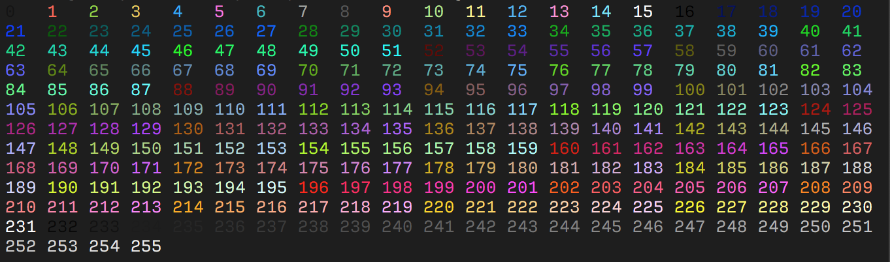

ANSI 转义序列¶
文档时效性说明
本文为早期笔记，可能存在版本过时、命令失效、链接失效、最佳实践变化等问题。请以官方最新文档为准。
原英文标题：ANSI Escape Sequences
标准转义码以 Escape 为前缀：
- Ctrl-Key:
^[ - Octal:
\033 - Unicode:
\u001b - Hexadecimal:
\x1B - Decimal:
27
后跟命令，有时以左方括号（[）作为定界符，即 Control Sequence Introducer（CSI），之后可跟随参数和命令本身。
参数以半角分号（;）分隔。
例如：
1. Sequences¶
ESC- 以ESC（\x1B）开头的序列CSI- Control Sequence Introducer：以ESC [或 CSI（\x9B）开头的序列DCS- Device Control String：以ESC P或 DCS（\x90）开头的序列OSC- Operating System Command：以ESC ]或 OSC（\x9D）开头的序列
序列与参数之间的任何空白都应忽略，它们仅用于提升可读性。
2. General ASCII Codes¶
| Name | decimal | octal | hex | C-escape | Ctrl-Key | Description |
|---|---|---|---|---|---|---|
BEL |
7 | 007 | 0x07 | \a |
^G |
Terminal bell |
BS |
8 | 010 | 0x08 | \b |
^H |
Backspace |
HT |
9 | 011 | 0x09 | \t |
^I |
Horizontal TAB |
LF |
10 | 012 | 0x0A | \n |
^J |
Linefeed (newline) |
VT |
11 | 013 | 0x0B | \v |
^K |
Vertical TAB |
FF |
12 | 014 | 0x0C | \f |
^L |
Formfeed (also: New page NP) |
CR |
13 | 015 | 0x0D | \r |
^M |
Carriage return |
ESC |
27 | 033 | 0x1B | \e* |
^[ |
Escape character |
DEL |
127 | 177 | 0x7F | <none> |
<none> |
Delete character |
Note: 某些控制转义序列（如
ESC的\e）并不能保证在所有语言和编译器中都有效。建议使用十进制、八进制或十六进制表示法作为转义码。Note: Ctrl-Key 表示法只是将 ASCII 码 1 的非可打印字符与 ASCII 码 65（"A"）的可打印（字母）字符关联起来。ASCII 码 1 对应
^A（Ctrl-A），而 ASCII 码 7（BEL）对应^G（Ctrl-G）。这是一种常见的表示法（及输入方式），历史上源自 VT 系列终端之一。
3. Cursor Controls¶
| ESC Code Sequence | Description |
|---|---|
ESC[H |
将光标移动到起始位置 (0, 0) |
ESC[{line};{column}H ESC[{line};{column}f |
将光标移动到第 # 行、第 # 列 |
ESC[#A |
将光标向上移动 # 行 |
ESC[#B |
将光标向下移动 # 行 |
ESC[#C |
将光标向右移动 # 列 |
ESC[#D |
将光标向左移动 # 列 |
ESC[#E |
将光标向下移动 # 行，并移至行首 |
ESC[#F |
将光标向上移动 # 行，并移至行首 |
ESC[#G |
将光标移动到第 # 列 |
ESC[6n |
请求光标位置（以 ESC[#;#R 报告） |
ESC M |
将光标向上移动一行，必要时滚动 |
ESC 7 |
保存光标位置（DEC） |
ESC 8 |
恢复光标至最后保存的位置（DEC） |
ESC[s |
保存光标位置（SCO） |
ESC[u |
恢复光标至最后保存的位置（SCO） |
Note: 某些序列（如保存和恢复光标）属于私有序列，未被标准化。虽然某些终端模拟器（如 xterm 及其衍生版本）同时支持 SCO 和 DEC 序列，但它们的功能可能不同。因此建议使用 DEC 序列。
4. Erase Functions¶
| ESC Code Sequence | Description |
|---|---|
ESC[J |
擦除显示（等同于 ESC[0J） |
ESC[0J |
从光标位置擦除到屏幕末尾 |
ESC[1J |
从光标位置擦除到屏幕开头 |
ESC[2J |
擦除整个屏幕 |
ESC[3J |
擦除已保存的行 |
ESC[K |
擦除行内（等同于 ESC[0K） |
ESC[0K |
从光标位置擦除到行末 |
ESC[1K |
从行首擦除到光标位置 |
ESC[2K |
擦除整行 |
Note: 擦除行不会移动光标，即光标会停留在擦除前所在的最后一个位置。擦除后可以使用
\r将光标移回当前行开头。
5. Colors / Graphics Mode¶
| ESC Code Sequence | Reset Sequence | Description |
|---|---|---|
ESC[1;34;{...}m |
设置单元格的图形模式，以半角分号（;）分隔。 |
|
ESC[0m |
重置所有模式（样式和颜色） | |
ESC[1m |
ESC[22m |
设置粗体模式。 |
ESC[2m |
ESC[22m |
设置暗色/淡化模式。 |
ESC[3m |
ESC[23m |
设置斜体模式。 |
ESC[4m |
ESC[24m |
设置下划线模式。 |
ESC[5m |
ESC[25m |
设置闪烁模式 |
ESC[7m |
ESC[27m |
设置反色/反转模式 |
ESC[8m |
ESC[28m |
设置隐藏/不可见模式 |
ESC[9m |
ESC[29m |
设置删除线模式。 |
Note: 某些终端可能不支持上述部分图形模式序列。
Note: 暗色和粗体模式都通过
ESC[22m序列重置。ESC[21m序列是未规范定义的双下划线模式，仅在某些终端中有效，并通过ESC[24m重置。
5.1 Color codes¶
大多数终端支持 8 和 16 种颜色，以及 256（8-bit）色。这些颜色由用户设置，但通常具有普遍定义的含义。
5.1.1 8-16 Colors¶
| Color Name | Foreground Color Code | Background Color Code |
|---|---|---|
| Black | 30 |
40 |
| Red | 31 |
41 |
| Green | 32 |
42 |
| Yellow | 33 |
43 |
| Blue | 34 |
44 |
| Magenta | 35 |
45 |
| Cyan | 36 |
46 |
| White | 37 |
47 |
| Default | 39 |
49 |
| Reset | 0 |
0 |
Note: Reset 颜色是重置代码，会重置所有颜色和文本效果。若要仅重置颜色，请使用 Default 颜色。
大多数终端除了基本的 8 种颜色外，还支持 "bright" 或 "bold" 颜色。它们拥有各自的代码集，与常规颜色对应，但在代码中额外增加 ;1：
支持 aixterm specification 的终端提供了 ISO 颜色的明亮版本，无需使用 bold 修饰符：
| Color Name | Foreground Color Code | Background Color Code |
|---|---|---|
| Bright Black | 90 |
100 |
| Bright Red | 91 |
101 |
| Bright Green | 92 |
102 |
| Bright Yellow | 93 |
103 |
| Bright Blue | 94 |
104 |
| Bright Magenta | 95 |
105 |
| Bright Cyan | 96 |
106 |
| Bright White | 97 |
107 |
5.1.2 256 Colors¶
以下转义码告诉终端使用指定的颜色 ID：
| ESC Code Sequence | Description |
|---|---|
ESC[38;5;{ID}m |
设置前景色。 |
ESC[48;5;{ID}m |
设置背景色。 |
其中 {ID} 应替换为以下颜色表中 0 到 255 的颜色索引：

该表以最初的 16 种颜色（0-15）开头。
接下来的 216 种颜色（16-231）由偏移 16 的 3bpc RGB 值打包为单个值形成。
最后的 24 种颜色（232-255）是灰度，从略浅于黑色的色度开始，一直到略深于白色的色度。
某些模拟器将这些步长解释为所有三个通道上的线性增量（256 / 24），尽管某些模拟器可能会显式定义这些值。
5.1.3 RGB Colors¶
更现代的终端支持 Truecolor（24-bit RGB），允许使用 RGB 设置前景色和背景色。
这些转义序列通常文档较少。
| ESC Code Sequence | Description |
|---|---|
ESC[38;2;{r};{g};{b}m |
设置 RGB 前景色。 |
ESC[48;2;{r};{g};{b}m |
设置 RGB 背景色。 |
Note that
;38和;48对应 16 色序列，终端会将其解释为分别设置前景色和背景色。而;2和;5则设置颜色格式。
6. Screen Modes¶
6.1 Set Mode¶
| ESC Code Sequence | Description |
|---|---|
ESC[={value}h |
将屏幕宽度或类型更改为 value 指定的模式。 |
ESC[=0h |
40 x 25 monochrome (text) |
ESC[=1h |
40 x 25 color (text) |
ESC[=2h |
80 x 25 monochrome (text) |
ESC[=3h |
80 x 25 color (text) |
ESC[=4h |
320 x 200 4-color (graphics) |
ESC[=5h |
320 x 200 monochrome (graphics) |
ESC[=6h |
640 x 200 monochrome (graphics) |
ESC[=7h |
启用自动换行 |
ESC[=13h |
320 x 200 color (graphics) |
ESC[=14h |
640 x 200 color (16-color graphics) |
ESC[=15h |
640 x 350 monochrome (2-color graphics) |
ESC[=16h |
640 x 350 color (16-color graphics) |
ESC[=17h |
640 x 480 monochrome (2-color graphics) |
ESC[=18h |
640 x 480 color (16-color graphics) |
ESC[=19h |
320 x 200 color (256-color graphics) |
ESC[={value}l |
使用与 Set Mode 相同的值重置模式，但 7 除外，它禁用自动换行。此转义序列的最后一个字符是小写的 L。 |
6.2 Common Private Modes¶
以下是一些私有模式的示例，它们未被规范定义，但大多数终端都实现了。
| ESC Code Sequence | Description |
|---|---|
ESC[?25l |
隐藏光标 |
ESC[?25h |
显示光标 |
ESC[?47l |
恢复屏幕 |
ESC[?47h |
保存屏幕 |
ESC[?1049h |
启用备用缓冲区 |
ESC[?1049l |
禁用备用缓冲区 |
有关 XTerm 定义的更多私有模式列表，请参阅 XTerm Control Sequences。
Note: 虽然大多数终端可能支持这些模式，但有些在 tmux 等多路复用器中可能无法工作。
6.3 Keyboard Strings¶
将键盘按键重新定义为由指定字符串。
此转义序列的参数定义如下：
code是下表中列出的一个或多个值。这些值代表键盘按键和组合键。在命令中使用这些值时，必须输入本表中所示的半角分号，以及转义序列所需的分号。括号中的代码在某些键盘上不可用。除非在ANSI.SYS的DEVICE命令中指定/X开关，否则ANSI.SYS不会为这些键盘解释括号中的代码。
string可以是单个字符的 ASCII 码，也可以是包含在引号中的字符串。例如，65 和 "A" 都可以用来表示大写 A。
IMPORTANT: 下表中某些值并非对所有计算机都有效。请查阅计算机文档以了解可能不同的值。
6.3.1 List of keyboard strings¶
| Key | Code | SHIFT+code | CTRL+code | ALT+code |
|---|---|---|---|---|
| F1 | 0;59 | 0;84 | 0;94 | 0;104 |
| F2 | 0;60 | 0;85 | 0;95 | 0;105 |
| F3 | 0;61 | 0;86 | 0;96 | 0;106 |
| F4 | 0;62 | 0;87 | 0;97 | 0;107 |
| F5 | 0;63 | 0;88 | 0;98 | 0;108 |
| F6 | 0;64 | 0;89 | 0;99 | 0;109 |
| F7 | 0;65 | 0;90 | 0;100 | 0;110 |
| F8 | 0;66 | 0;91 | 0;101 | 0;111 |
| F9 | 0;67 | 0;92 | 0;102 | 0;112 |
| F10 | 0;68 | 0;93 | 0;103 | 0;113 |
| F11 | 0;133 | 0;135 | 0;137 | 0;139 |
| F12 | 0;134 | 0;136 | 0;138 | 0;140 |
| HOME (num keypad) | 0;71 | 55 | 0;119 | -- |
| UP ARROW (num keypad) | 0;72 | 56 | (0;141) | -- |
| PAGE UP (num keypad) | 0;73 | 57 | 0;132 | -- |
| LEFT ARROW (num keypad) | 0;75 | 52 | 0;115 | -- |
| RIGHT ARROW (num keypad) | 0;77 | 54 | 0;116 | -- |
| END (num keypad) | 0;79 | 49 | 0;117 | -- |
| DOWN ARROW (num keypad) | 0;80 | 50 | (0;145) | -- |
| PAGE DOWN (num keypad) | 0;81 | 51 | 0;118 | -- |
| INSERT (num keypad) | 0;82 | 48 | (0;146) | -- |
| DELETE (num keypad) | 0;83 | 46 | (0;147) | -- |
| HOME | (224;71) | (224;71) | (224;119) | (224;151) |
| UP ARROW | (224;72) | (224;72) | (224;141) | (224;152) |
| PAGE UP | (224;73) | (224;73) | (224;132) | (224;153) |
| LEFT ARROW | (224;75) | (224;75) | (224;115) | (224;155) |
| RIGHT ARROW | (224;77) | (224;77) | (224;116) | (224;157) |
| END | (224;79) | (224;79) | (224;117) | (224;159) |
| DOWN ARROW | (224;80) | (224;80) | (224;145) | (224;154) |
| PAGE DOWN | (224;81) | (224;81) | (224;118) | (224;161) |
| INSERT | (224;82) | (224;82) | (224;146) | (224;162) |
| DELETE | (224;83) | (224;83) | (224;147) | (224;163) |
| PRINT SCREEN | -- | -- | 0;114 | -- |
| PAUSE/BREAK | -- | -- | 0;0 | -- |
| BACKSPACE | 8 | 8 | 127 | (0) |
| ENTER | 13 | -- | 10 | (0 |
| TAB | 9 | 0;15 | (0;148) | (0;165) |
| NULL | 0;3 | -- | -- | -- |
| A | 97 | 65 | 1 | 0;30 |
| B | 98 | 66 | 2 | 0;48 |
| C | 99 | 66 | 3 | 0;46 |
| D | 100 | 68 | 4 | 0;32 |
| E | 101 | 69 | 5 | 0;18 |
| F | 102 | 70 | 6 | 0;33 |
| G | 103 | 71 | 7 | 0;34 |
| H | 104 | 72 | 8 | 0;35 |
| I | 105 | 73 | 9 | 0;23 |
| J | 106 | 74 | 10 | 0;36 |
| K | 107 | 75 | 11 | 0;37 |
| L | 108 | 76 | 12 | 0;38 |
| M | 109 | 77 | 13 | 0;50 |
| N | 110 | 78 | 14 | 0;49 |
| O | 111 | 79 | 15 | 0;24 |
| P | 112 | 80 | 16 | 0;25 |
| Q | 113 | 81 | 17 | 0;16 |
| R | 114 | 82 | 18 | 0;19 |
| S | 115 | 83 | 19 | 0;31 |
| T | 116 | 84 | 20 | 0;20 |
| U | 117 | 85 | 21 | 0;22 |
| V | 118 | 86 | 22 | 0;47 |
| W | 119 | 87 | 23 | 0;17 |
| X | 120 | 88 | 24 | 0;45 |
| Y | 121 | 89 | 25 | 0;21 |
| Z | 122 | 90 | 26 | 0;44 |
| 1 | 49 | 33 | -- | 0;120 |
| 2 | 50 | 64 | 0 | 0;121 |
| 3 | 51 | 35 | -- | 0;122 |
| 4 | 52 | 36 | -- | 0;123 |
| 5 | 53 | 37 | -- | 0;124 |
| 6 | 54 | 94 | 30 | 0;125 |
| 7 | 55 | 38 | -- | 0;126 |
| 8 | 56 | 42 | -- | 0;126 |
| 9 | 57 | 40 | -- | 0;127 |
| 0 | 48 | 41 | -- | 0;129 |
| - | 45 | 95 | 31 | 0;130 |
| = | 61 | 43 | --- | 0;131 |
| [ | 91 | 123 | 27 | 0;26 |
| ] | 93 | 125 | 29 | 0;27 |
| 92 | 124 | 28 | 0;43 | |
| ; | 59 | 58 | -- | 0;39 |
| ' | 39 | 34 | -- | 0;40 |
| , | 44 | 60 | -- | 0;51 |
| . | 46 | 62 | -- | 0;52 |
| / | 47 | 63 | -- | 0;53 |
| ` | 96 | 126 | -- | (0;41) |
| ENTER (keypad) | 13 | -- | 10 | (0;166) |
| / (keypad) | 47 | 47 | (0;142) | (0;74) |
| * (keypad) | 42 | (0;144) | (0;78) | -- |
| - (keypad) | 45 | 45 | (0;149) | (0;164) |
| + (keypad) | 43 | 43 | (0;150) | (0;55) |
| 5 (keypad) | (0;76) | 53 | (0;143) | -- |
7. Resources¶
- Wikipedia: ANSI escape code
- Build your own Command Line with ANSI escape codes
- ascii-table: ANSI Escape sequences
- bluesock: ansi codes
- bash-hackers: Terminal Codes (ANSI/VT100) introduction
- XTerm Control Sequences
- VT100 – Various terminal manuals
- xterm.js – Supported Terminal Sequences
8. 原文（English）¶
Standard escape codes are prefixed with Escape:
- Ctrl-Key:
^[ - Octal:
\033 - Unicode:
\u001b - Hexadecimal:
\x1B - Decimal:
27
Followed by the command, somtimes delimited by opening square bracket ([), known as a Control Sequence Introducer (CSI), optionally followed by arguments and the command itself.
Arguments are delimeted by semi colon (;).
For example:
9. Sequences¶
ESC- sequence starting withESC(\x1B)CSI- Control Sequence Introducer: sequence starting withESC [or CSI (\x9B)DCS- Device Control String: sequence starting withESC Por DCS (\x90)OSC- Operating System Command: sequence starting withESC ]or OSC (\x9D)
Any whitespaces between sequences and arguments should be ignored. They are present for improved readability.
10. General ASCII Codes¶
| Name | decimal | octal | hex | C-escape | Ctrl-Key | Description |
|---|---|---|---|---|---|---|
BEL |
7 | 007 | 0x07 | \a |
^G |
Terminal bell |
BS |
8 | 010 | 0x08 | \b |
^H |
Backspace |
HT |
9 | 011 | 0x09 | \t |
^I |
Horizontal TAB |
LF |
10 | 012 | 0x0A | \n |
^J |
Linefeed (newline) |
VT |
11 | 013 | 0x0B | \v |
^K |
Vertical TAB |
FF |
12 | 014 | 0x0C | \f |
^L |
Formfeed (also: New page NP) |
CR |
13 | 015 | 0x0D | \r |
^M |
Carriage return |
ESC |
27 | 033 | 0x1B | \e* |
^[ |
Escape character |
DEL |
127 | 177 | 0x7F | <none> |
<none> |
Delete character |
Note: Some control escape sequences, like
\eforESC, are not guaranteed to work in all languages and compilers. It is recommended to use the decimal, octal or hex representation as escape code.Note: The Ctrl-Key representation is simply associating the non-printable characters from ASCII code 1 with the printable (letter) characters from ASCII code 65 ("A"). ASCII code 1 would be
^A(Ctrl-A), while ASCII code 7 (BEL) would be^G(Ctrl-G). This is a common representation (and input method) and historically comes from one of the VT series of terminals.
11. Cursor Controls¶
| ESC Code Sequence | Description |
|---|---|
ESC[H |
moves cursor to home position (0, 0) |
ESC[{line};{column}H ESC[{line};{column}f |
moves cursor to line #, column # |
ESC[#A |
moves cursor up # lines |
ESC[#B |
moves cursor down # lines |
ESC[#C |
moves cursor right # columns |
ESC[#D |
moves cursor left # columns |
ESC[#E |
moves cursor to beginning of next line, # lines down |
ESC[#F |
moves cursor to beginning of previous line, # lines up |
ESC[#G |
moves cursor to column # |
ESC[6n |
request cursor position (reports as ESC[#;#R) |
ESC M |
moves cursor one line up, scrolling if needed |
ESC 7 |
save cursor position (DEC) |
ESC 8 |
restores the cursor to the last saved position (DEC) |
ESC[s |
save cursor position (SCO) |
ESC[u |
restores the cursor to the last saved position (SCO) |
Note: Some sequences, like saving and restoring cursors, are private sequences and are not standardized. While some terminal emulators (i.e. xterm and derived) support both SCO and DEC sequences, they are likely to have different functionality. It is therefore recommended to use DEC sequences.
12. Erase Functions¶
| ESC Code Sequence | Description |
|---|---|
ESC[J |
erase in display (same as ESC[0J) |
ESC[0J |
erase from cursor until end of screen |
ESC[1J |
erase from cursor to beginning of screen |
ESC[2J |
erase entire screen |
ESC[3J |
erase saved lines |
ESC[K |
erase in line (same as ESC[0K) |
ESC[0K |
erase from cursor to end of line |
ESC[1K |
erase start of line to the cursor |
ESC[2K |
erase the entire line |
Note: Erasing the line won't move the cursor, meaning that the cursor will stay at the last position it was at before the line was erased. You can use
\rafter erasing the line, to return the cursor to the start of the current line.
13. Colors / Graphics Mode¶
| ESC Code Sequence | Reset Sequence | Description |
|---|---|---|
ESC[1;34;{...}m |
Set graphics modes for cell, separated by semicolon (;). |
|
ESC[0m |
reset all modes (styles and colors) | |
ESC[1m |
ESC[22m |
set bold mode. |
ESC[2m |
ESC[22m |
set dim/faint mode. |
ESC[3m |
ESC[23m |
set italic mode. |
ESC[4m |
ESC[24m |
set underline mode. |
ESC[5m |
ESC[25m |
set blinking mode |
ESC[7m |
ESC[27m |
set inverse/reverse mode |
ESC[8m |
ESC[28m |
set hidden/invisible mode |
ESC[9m |
ESC[29m |
set strikethrough mode. |
Note: Some terminals may not support some of the graphic mode sequences listed above.
Note: Both dim and bold modes are reset with the
ESC[22msequence. TheESC[21msequence is a non-specified sequence for double underline mode and only work in some terminals and is reset withESC[24m.
13.1 Color codes¶
Most terminals support 8 and 16 colors, as well as 256 (8-bit) colors. These colors are set by the user, but have commonly defined meanings.
13.1.1 8-16 Colors¶
| Color Name | Foreground Color Code | Background Color Code |
|---|---|---|
| Black | 30 |
40 |
| Red | 31 |
41 |
| Green | 32 |
42 |
| Yellow | 33 |
43 |
| Blue | 34 |
44 |
| Magenta | 35 |
45 |
| Cyan | 36 |
46 |
| White | 37 |
47 |
| Default | 39 |
49 |
| Reset | 0 |
0 |
Note: the Reset color is the reset code that resets all colors and text effects, Use Default color to reset colors only.
Most terminals, apart from the basic set of 8 colors, also support the "bright" or "bold" colors. These have their own set of codes, mirroring the normal colors, but with an additional ;1 in their codes:
Terminals that support the aixterm specification provides bright versions of the ISO colors, without the need to use the bold modifier:
| Color Name | Foreground Color Code | Background Color Code |
|---|---|---|
| Bright Black | 90 |
100 |
| Bright Red | 91 |
101 |
| Bright Green | 92 |
102 |
| Bright Yellow | 93 |
103 |
| Bright Blue | 94 |
104 |
| Bright Magenta | 95 |
105 |
| Bright Cyan | 96 |
106 |
| Bright White | 97 |
107 |
13.1.2 256 Colors¶
The following escape codes tells the terminal to use the given color ID:
| ESC Code Sequence | Description |
|---|---|
ESC[38;5;{ID}m |
Set foreground color. |
ESC[48;5;{ID}m |
Set background color. |
Where {ID} should be replaced with the color index from 0 to 255 of the following color table:
The table starts with the original 16 colors (0-15).
The proceeding 216 colors (16-231) or formed by a 3bpc RGB value offset by 16, packed into a single value.
The final 24 colors (232-255) are grayscale starting from a shade slighly lighter than black, ranging up to shade slightly darker than white.
Some emulators interpret these steps as linear increments (256 / 24) on all three channels, although some emulators may explicitly define these values.
13.1.3 RGB Colors¶
More modern terminals supports Truecolor (24-bit RGB), which allows you to set foreground and background colors using RGB.
These escape sequences are usually not well documented.
| ESC Code Sequence | Description |
|---|---|
ESC[38;2;{r};{g};{b}m |
Set foreground color as RGB. |
ESC[48;2;{r};{g};{b}m |
Set background color as RGB. |
Note that
;38and;48corresponds to the 16 color sequence and is interpreted by the terminal to set the foreground and background color respectively. Where as;2and;5sets the color format.
14. Screen Modes¶
14.1 Set Mode¶
| ESC Code Sequence | Description |
|---|---|
ESC[={value}h |
Changes the screen width or type to the mode specified by value. |
ESC[=0h |
40 x 25 monochrome (text) |
ESC[=1h |
40 x 25 color (text) |
ESC[=2h |
80 x 25 monochrome (text) |
ESC[=3h |
80 x 25 color (text) |
ESC[=4h |
320 x 200 4-color (graphics) |
ESC[=5h |
320 x 200 monochrome (graphics) |
ESC[=6h |
640 x 200 monochrome (graphics) |
ESC[=7h |
Enables line wrapping |
ESC[=13h |
320 x 200 color (graphics) |
ESC[=14h |
640 x 200 color (16-color graphics) |
ESC[=15h |
640 x 350 monochrome (2-color graphics) |
ESC[=16h |
640 x 350 color (16-color graphics) |
ESC[=17h |
640 x 480 monochrome (2-color graphics) |
ESC[=18h |
640 x 480 color (16-color graphics) |
ESC[=19h |
320 x 200 color (256-color graphics) |
ESC[={value}l |
Resets the mode by using the same values that Set Mode uses, except for 7, which disables line wrapping. The last character in this escape sequence is a lowercase L. |
14.2 Common Private Modes¶
These are some examples of private modes, which are not defined by the specification, but are implemented in most terminals.
| ESC Code Sequence | Description |
|---|---|
ESC[?25l |
make cursor invisible |
ESC[?25h |
make cursor visible |
ESC[?47l |
restore screen |
ESC[?47h |
save screen |
ESC[?1049h |
enables the alternative buffer |
ESC[?1049l |
disables the alternative buffer |
Refer to the XTerm Control Sequences for a more in-depth list of private modes defined by XTerm.
Note: While these modes may be supported by the most terminals, some may not work in multiplexers like tmux.
14.3 Keyboard Strings¶
Redefines a keyboard key to a specified string.
The parameters for this escape sequence are defined as follows:
codeis one or more of the values listed in the following table. These values represent keyboard keys and key combinations. When using these values in a command, you must type the semicolons shown in this table in addition to the semicolons required by the escape sequence. The codes in parentheses are not available on some keyboards.ANSI.SYSwill not interpret the codes in parentheses for those keyboards unless you specify the/Xswitch in theDEVICEcommand forANSI.SYS.
stringis either the ASCII code for a single character or a string contained in quotation marks. For example, both 65 and "A" can be used to represent an uppercase A.
IMPORTANT: Some of the values in the following table are not valid for all computers. Check your computer's documentation for values that are different.
14.3.1 List of keyboard strings¶
| Key | Code | SHIFT+code | CTRL+code | ALT+code |
|---|---|---|---|---|
| F1 | 0;59 | 0;84 | 0;94 | 0;104 |
| F2 | 0;60 | 0;85 | 0;95 | 0;105 |
| F3 | 0;61 | 0;86 | 0;96 | 0;106 |
| F4 | 0;62 | 0;87 | 0;97 | 0;107 |
| F5 | 0;63 | 0;88 | 0;98 | 0;108 |
| F6 | 0;64 | 0;89 | 0;99 | 0;109 |
| F7 | 0;65 | 0;90 | 0;100 | 0;110 |
| F8 | 0;66 | 0;91 | 0;101 | 0;111 |
| F9 | 0;67 | 0;92 | 0;102 | 0;112 |
| F10 | 0;68 | 0;93 | 0;103 | 0;113 |
| F11 | 0;133 | 0;135 | 0;137 | 0;139 |
| F12 | 0;134 | 0;136 | 0;138 | 0;140 |
| HOME (num keypad) | 0;71 | 55 | 0;119 | -- |
| UP ARROW (num keypad) | 0;72 | 56 | (0;141) | -- |
| PAGE UP (num keypad) | 0;73 | 57 | 0;132 | -- |
| LEFT ARROW (num keypad) | 0;75 | 52 | 0;115 | -- |
| RIGHT ARROW (num keypad) | 0;77 | 54 | 0;116 | -- |
| END (num keypad) | 0;79 | 49 | 0;117 | -- |
| DOWN ARROW (num keypad) | 0;80 | 50 | (0;145) | -- |
| PAGE DOWN (num keypad) | 0;81 | 51 | 0;118 | -- |
| INSERT (num keypad) | 0;82 | 48 | (0;146) | -- |
| DELETE (num keypad) | 0;83 | 46 | (0;147) | -- |
| HOME | (224;71) | (224;71) | (224;119) | (224;151) |
| UP ARROW | (224;72) | (224;72) | (224;141) | (224;152) |
| PAGE UP | (224;73) | (224;73) | (224;132) | (224;153) |
| LEFT ARROW | (224;75) | (224;75) | (224;115) | (224;155) |
| RIGHT ARROW | (224;77) | (224;77) | (224;116) | (224;157) |
| END | (224;79) | (224;79) | (224;117) | (224;159) |
| DOWN ARROW | (224;80) | (224;80) | (224;145) | (224;154) |
| PAGE DOWN | (224;81) | (224;81) | (224;118) | (224;161) |
| INSERT | (224;82) | (224;82) | (224;146) | (224;162) |
| DELETE | (224;83) | (224;83) | (224;147) | (224;163) |
| PRINT SCREEN | -- | -- | 0;114 | -- |
| PAUSE/BREAK | -- | -- | 0;0 | -- |
| BACKSPACE | 8 | 8 | 127 | (0) |
| ENTER | 13 | -- | 10 | (0 |
| TAB | 9 | 0;15 | (0;148) | (0;165) |
| NULL | 0;3 | -- | -- | -- |
| A | 97 | 65 | 1 | 0;30 |
| B | 98 | 66 | 2 | 0;48 |
| C | 99 | 66 | 3 | 0;46 |
| D | 100 | 68 | 4 | 0;32 |
| E | 101 | 69 | 5 | 0;18 |
| F | 102 | 70 | 6 | 0;33 |
| G | 103 | 71 | 7 | 0;34 |
| H | 104 | 72 | 8 | 0;35 |
| I | 105 | 73 | 9 | 0;23 |
| J | 106 | 74 | 10 | 0;36 |
| K | 107 | 75 | 11 | 0;37 |
| L | 108 | 76 | 12 | 0;38 |
| M | 109 | 77 | 13 | 0;50 |
| N | 110 | 78 | 14 | 0;49 |
| O | 111 | 79 | 15 | 0;24 |
| P | 112 | 80 | 16 | 0;25 |
| Q | 113 | 81 | 17 | 0;16 |
| R | 114 | 82 | 18 | 0;19 |
| S | 115 | 83 | 19 | 0;31 |
| T | 116 | 84 | 20 | 0;20 |
| U | 117 | 85 | 21 | 0;22 |
| V | 118 | 86 | 22 | 0;47 |
| W | 119 | 87 | 23 | 0;17 |
| X | 120 | 88 | 24 | 0;45 |
| Y | 121 | 89 | 25 | 0;21 |
| Z | 122 | 90 | 26 | 0;44 |
| 1 | 49 | 33 | -- | 0;120 |
| 2 | 50 | 64 | 0 | 0;121 |
| 3 | 51 | 35 | -- | 0;122 |
| 4 | 52 | 36 | -- | 0;123 |
| 5 | 53 | 37 | -- | 0;124 |
| 6 | 54 | 94 | 30 | 0;125 |
| 7 | 55 | 38 | -- | 0;126 |
| 8 | 56 | 42 | -- | 0;126 |
| 9 | 57 | 40 | -- | 0;127 |
| 0 | 48 | 41 | -- | 0;129 |
| - | 45 | 95 | 31 | 0;130 |
| = | 61 | 43 | --- | 0;131 |
| [ | 91 | 123 | 27 | 0;26 |
| ] | 93 | 125 | 29 | 0;27 |
| 92 | 124 | 28 | 0;43 | |
| ; | 59 | 58 | -- | 0;39 |
| ' | 39 | 34 | -- | 0;40 |
| , | 44 | 60 | -- | 0;51 |
| . | 46 | 62 | -- | 0;52 |
| / | 47 | 63 | -- | 0;53 |
| ` | 96 | 126 | -- | (0;41) |
| ENTER (keypad) | 13 | -- | 10 | (0;166) |
| / (keypad) | 47 | 47 | (0;142) | (0;74) |
| * (keypad) | 42 | (0;144) | (0;78) | -- |
| - (keypad) | 45 | 45 | (0;149) | (0;164) |
| + (keypad) | 43 | 43 | (0;150) | (0;55) |
| 5 (keypad) | (0;76) | 53 | (0;143) | -- |